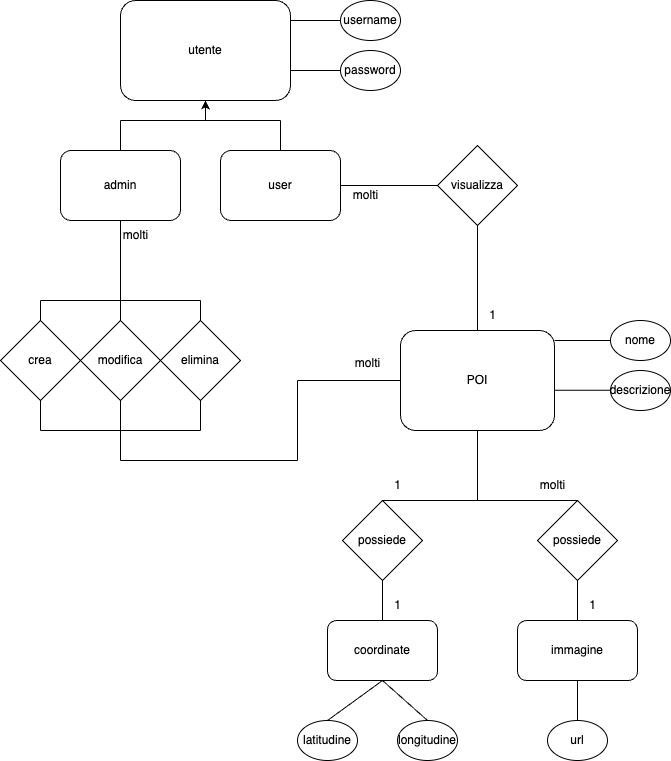
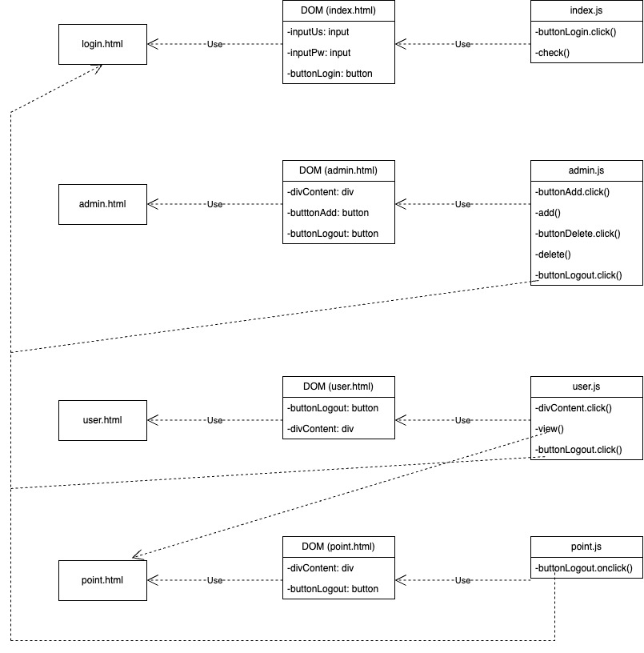

Documentazione
Progetto POI
Il progetto in questione consiste nel creare una web application per la gestione dei punti d'interesse di una città, che per il nostro gruppo è Bologna. La web app, dopo una pagina di login, consente di accedere tramite amministratore o tramite utente. L'admin ha la possibilità di aggiungere un nuovo POI (Point Of Interest) e di modificarlo/eliminarlo in seguito. L'utente invece può solamente visualizzare i POI in due modalità: lista o mappa. Cliccando sul POI, sia l'utente che l'amministratore vengono indirizzati alla pagina di dettaglio, nella quale potranno visualizzare il singolo POI, composto da nome, descrizione, 3-10 immagini, coordinate.
- Classe/Anno: 5Binf - 2023/2024
- Author: Gallo Tiziano, Mugnai Federico, Nuzzaci Gianluca
- Creato: 19/11/2023
- Ultima modifica: 17/12/2023
Architettura informazione
UML
Diagramma di Casi d'uso
Utente
Amministratore
sDiagramma di oggetti
Diagramma di Stato
Diagramma di Sequenza
Contenuti del progetto
Per la città di Bologna i componenti del gruppo hanno selezionato 6 punti di interesse.
Santuario Madonna di San Luca
Il Santuario della Madonna di San Luca è un luogo di culto cattolico situato sulla cima del Colle della Guardia, a sud-ovest del centro storico di Bologna. Questo santuario è un punto di riferimento importante per la città e fin dalle sue origini è stato meta di pellegrinaggi per venerare l’icona della Vergine col Bambino detta “di San Luca”. Il santuario è raggiungibile attraverso una lunga e caratteristica via porticata, che parte da Porta Saragozza e sale ripidamente fino alla cima del colle. Questa strada, con le sue oltre 600 arcate, è il porticato più lungo al mondo e, insieme agli altri portici della città, è stato recentemente nominato Patrimonio Mondiale UNESCO. All’interno del santuario, l’icona della Madonna di San Luca, una preziosa opera d’arte bizantina, accoglie i fedeli e i visitatori con il suo sguardo materno. La basilica, con la sua facciata in stile neoclassico e l’interno riccamente decorato, offre un luogo di pace e riflessione. Nel complesso, il Santuario della Madonna di San Luca è un luogo di grande importanza storica, artistica e religiosa.COORDINATE: 44.4791° N, 11.2981° E


FONTI:
1) Santuario della Madonna di San Luca - Wikipedia.
2) Santuario di San Luca - Bologna Welcome.
3) Santuario della Beata Vergine di San Luca.
4) Visita il Santuario – Santuario della Beata Vergine di San Luca.
5) Santuario della Madonna di San Luca, Bologna: storia e visita - Viaggiamo.
6) Santuario di San Luca - Bologna Welcome.
Basilica di San Petronio
La Basilica di San Petronio, situata in Piazza Maggiore a Bologna, è un capolavoro dell’architettura gotica italiana. Nonostante sia incompiuta, è una delle chiese più grandi d’Europa, con una lunghezza di 132 metri, una larghezza di 60 metri e un’altezza di 44,27 metri. La facciata raggiunge i 51 metri. La costruzione iniziò nel 1390 sotto la direzione di Antonio di Vincenzo. La basilica è dedicata a San Petronio, il santo patrono della città, che divenne tale nella prima metà del V secolo. L’interno della chiesa è altrettanto impressionante, con 22 cappelle laterali che ospitano numerose opere d’arte. La basilica è anche famosa per il suo meridiano solare, il più lungo al mondo, tracciato da Gian Domenico Cassini e Domenico Guglielmini nel 1655. Questo meridiano è un esempio straordinario di come scienza e religione possano coesistere. La basilica è anche un luogo di pellegrinaggio per i fedeli, che vengono a rendere omaggio a San Petronio. Nel complesso, la Basilica di San Petronio è un luogo di grande importanza storica, artistica e religiosa.COORDINATE: 44.4929° N, 11.3431° E


FONTI:
1) Basilica di San Petronio - Wikipedia.
2) Basilica di San Petronio - Bologna Welcome.
3) San petronio tra storia e leggenda - Basilica di San Petronio.
4) Basilica di San Petronio | Homepage.
5) San Petronio: chi era e perché il patrono di Bologna si festeggia il 4 .
6) Santuario di San Luca - Bologna Welcome.
Piazza Maggiore
Piazza Maggiore è la piazza principale della città di Bologna. Misura 115 metri in lunghezza per 60 metri in larghezza ed è circondata dai più importanti edifici della città medievale. Risale al 1200, quando il Comune iniziò ad acquisire case e terreni per costruire una piazza che da un lato avrebbe dovuto rappresentare l’importanza dell’istituzione comunale e dall’altro riunire le varie attività cittadine (scambi, commerci e servizi di vario genere). Soltanto dal Cinquecento è iniziata a essere conosciuta come Piazza Maggiore, anche se dalla cacciata degli austriaci al 1944 alla piazza venne attribuito il nome del Re d'Italia, Vittorio Emanuele II. Quindi solo a partire dal 1945 la piazza e il territorio immediatamente circostante iniziarono a conoscersi ufficialmente con il nome attuale: Piazza Maggiore. Essa è il risultato di trasformazioni secolari che hanno visto la Piazza arricchirsi via via di importanti edifici: la Basilica di San Petronio, il Palazzo dei Notai, il Palazzo d’Accursio, il Palazzo del Podestà e il Palazzo dei Banchi. La piazza è chiusa a nord dal Palazzo del Podestà, e ad ovest dal Palazzo d’Accursio, un monumentale complesso architettonico di origine trecentesca, attualmente sede del Comune di Bologna, delle Collezioni Comunali d’arte e del Museo Morandi, che costeggia anche l'attigua Piazza del Nettuno, al centro della quale sorge la Fontana del Nettuno (detta anche del Gigante) realizzata nel 1565 dal Giambologna. A sud si eleva la facciata incompiuta della Basilica di San Petronio, e ad est la piazza è chiusa dal Palazzo dei Banchi, una semplice facciata eretta tra il 1565 e il 1568, che sostituì elegantemente le povere costruzioni preesistenti che si affacciavano sulla piazza. La prosecuzione del portico del Palazzo dei Banchi è il portico dell'Archiginnasio, sede medievale dell'Università di Bologna (fondata nel 1088, l’università più antica del mondo), ora una delle più fornite biblioteche italiane ed europee; questo portico viene comunemente chiamato "il Pavaglione" (da una voce dialettale che significa "padiglione") e per secoli fu la sede dei commerci dei bachi da seta.COORDINATE: 44.4938° N, 11.3431° E


FONTI:
1) Piazza Maggiore - Wikipedia.
2) Piazza Maggiore - Bologna Welcome.
3) Università Bologna - Giovani2030.
Stazione di Bologna Centrale
La stazione di Bologna Centrale è una stazione ferroviaria italiana, sita nel comune di Bologna, a circa 1,5 km da Piazza Maggiore. Con i suoi 640 metri di lunghezza, 56 di larghezza e 23 di profondità, è articolata su tre livelli interrati:- il piano AV, circa 23 metri di profondità sotto il piazzale di stazione, è la sede dei 4 binari dedicati all’Alta Velocità ed ha due ampie banchine;
- il piano intermedio hall AV (-15 metri), è destinato ai servizi ferroviari (biglietterie self service, desk informativi, bagni) e commerciali (bar, edicola, ecc.) per i viaggiatori;
- il piano kiss&ride (-7 metri, non ancora operativo) è una strada sotterranea che attraversa la stazione in senso longitudinale, con un collegamento al parcheggio interrato Salesiani.
COORDINATE: 44.5058° N, 11.3434° E


FONTI:
1) Bologna Centrale - FSITALIANE.
2) Bologna Centrale - Wikipedia.
3) Strage di Bologna.
Le due Torri: Garisenda e degli Asinelli
Le due torri sono comunemente riconosciute come simbolo di Bologna e sorgono nel cuore della città al punto di ingresso dell’antica via Emilia. Realizzate nel corso del medioevo, avevano una funzione militare (di segnalazione e di difesa) e rappresentavano con la loro imponenza il prestigio sociale della famiglia responsabile della costruzione. TORRE DEGLI ASINELLI La Torre fu costruita tra 1109 - 19 dalla famiglia omonima e passa al Comune già nel secolo successivo. Salendo i 498 gradini della sua scala interna, si giunge alla vetta da cui si può godere, dall’alto dei suoi 97,20 metri, di una spettacolare vista della città. TORRE GARISENDA La Torre Garisenda, coeva alla precedente, si differenzia per la minore altezza di soli 47 metri. È nota per la sua forte pendenza, dovuta al cedimento del terreno e delle fondamenta, tanto che Dante la inserì nel XXXI Canto dell’Inferno. Abbassata per timore di futuro crollo a metà del XIV secolo, è oggi oggetto di restauro.COORDINATE: 44.4942° N, 11.3467° E


FONTI:
1) Le Due Torri - Bologna Welcome.
Fontana del Nettuno
Realizzata per volontà di papa Pio IV (Giovanni Angelo Medici) all’indomani del Concilio di Trento, la fontana del Nettuno è un’opera rinascimentale che si inserisce nel più vasto programma di rinnovamento architettonico del centro di Bologna, e in particolare di Piazza Maggiore, promosso dal Vice Legato pontificio Pier Donato Cesi. In questo riordino urbanistico di vaste proporzioni furono realizzati il portico dei Banchi su disegno del Vignola (1565), oltre alla nuova sede dell’Archiginnasio (1563) e alla antistante piazza delle Scuole (oggi piazza Galvani), mentre prese corpo anche un complesso programma di approvvigionamento di acqua corrente sfruttando un nuovo acquedotto proveniente dall’area collinare nei pressi del convento di San Michele in Bosco (fonti di Valverde collegate alla più antica fonte Remonda), che avrebbe alimentato un sistema di fontane pubbliche da collocarsi nei pressi del palazzo Apostolico (palazzo Comunale). Frutto di un progetto di collaborazione tra un architetto, Tommaso Laureti, e uno scultore, il Giambologna (Jean de Boulogne), questa fontana venne immaginata fin dall’inizio come simbolo spettacolare della munificenza e del buon governo pontificio, tanto che la sua originale denominazione di Aqua Pia (in onore di Pio IV), ne riflette in pieno l’intenzione. Essa fu concepita all’insegna della simmetria e dello slancio verticale d’insieme, con i diversi gruppi di figure (delfini, sirene, stemmi araldici, putti) disposti attorno alla figura serpentinata del Nettuno posto a coronamento della struttura monumentale.COORDINATE: 44.4943° N, 11.3427° E


FONTI:
1) Fontana del Nettuno - Comune di Bologna.
Wireframes
Il progetto
In questa sezione vanno inserite ulteriori informazioni aggiuntive (es. credenziali) ed il link al progetto